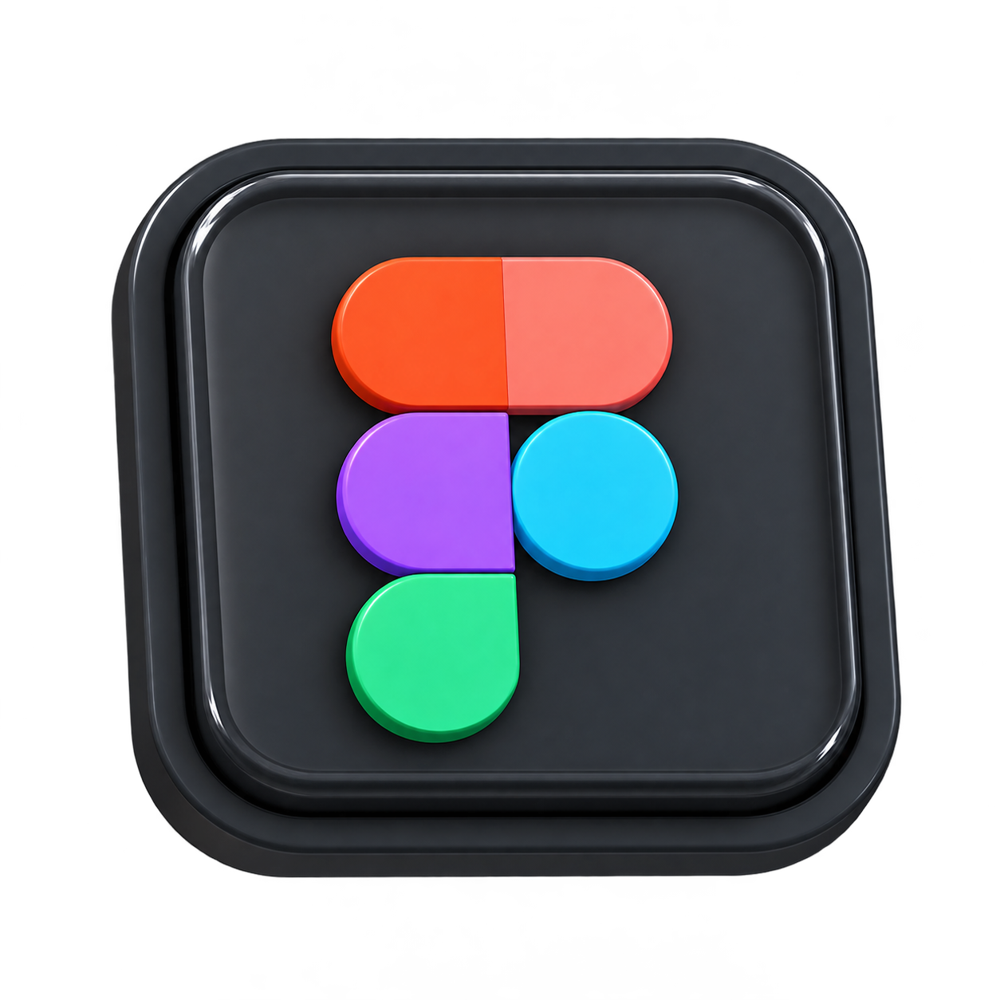
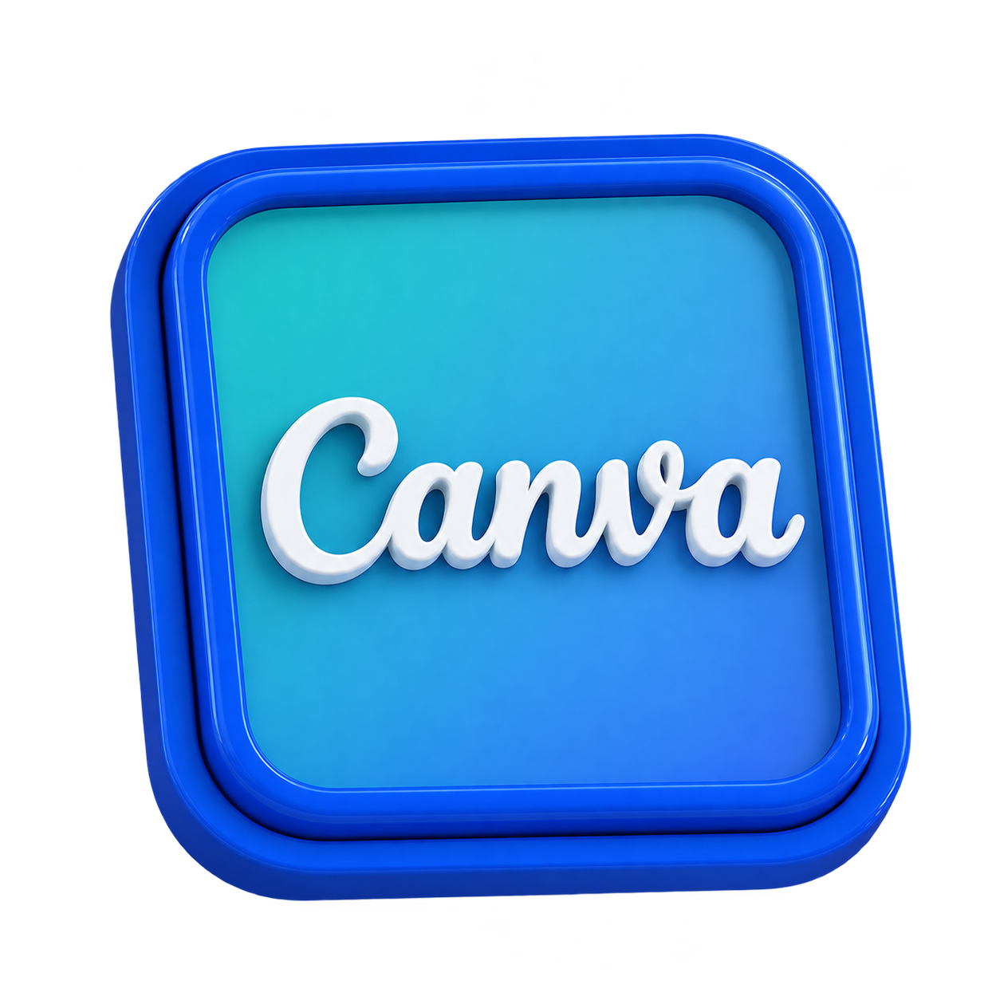
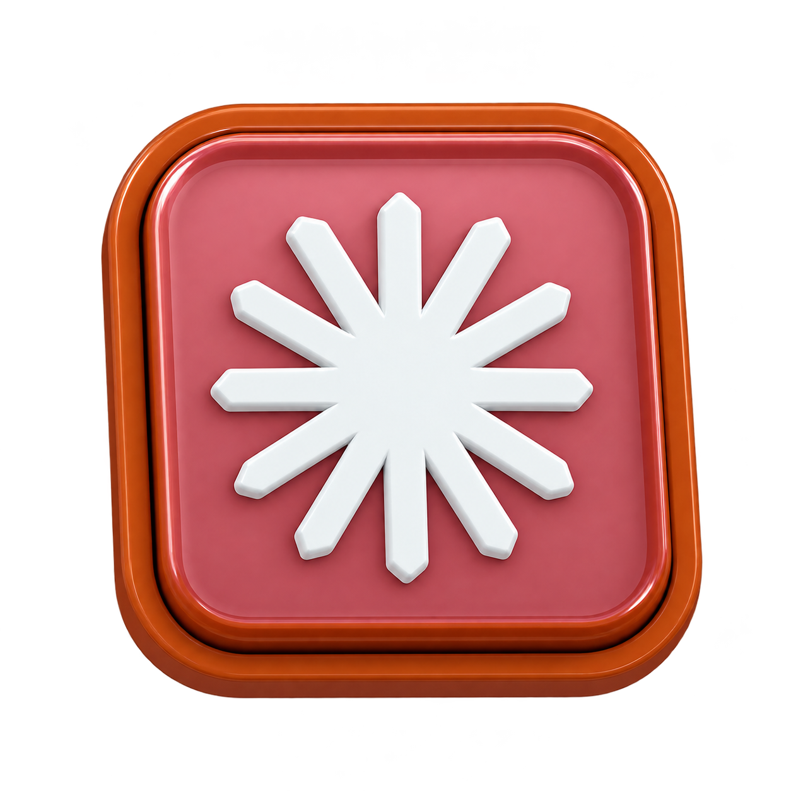
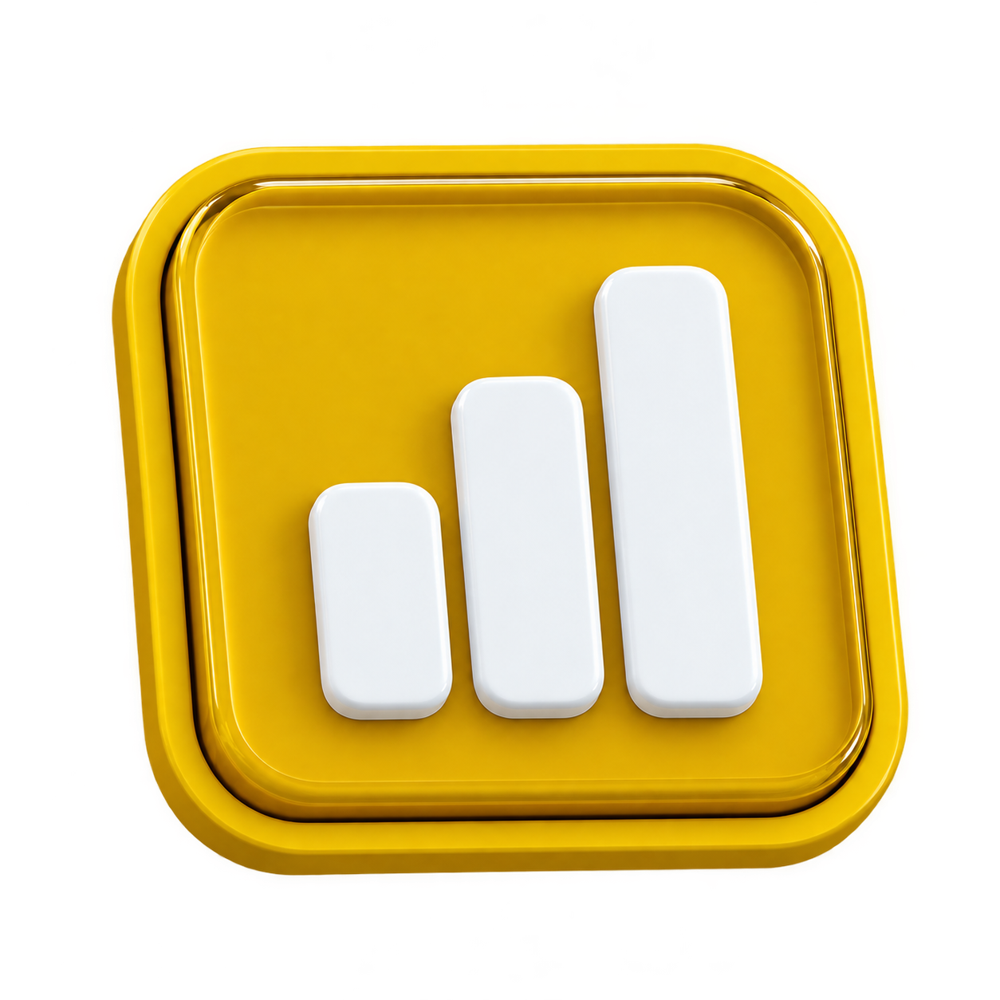
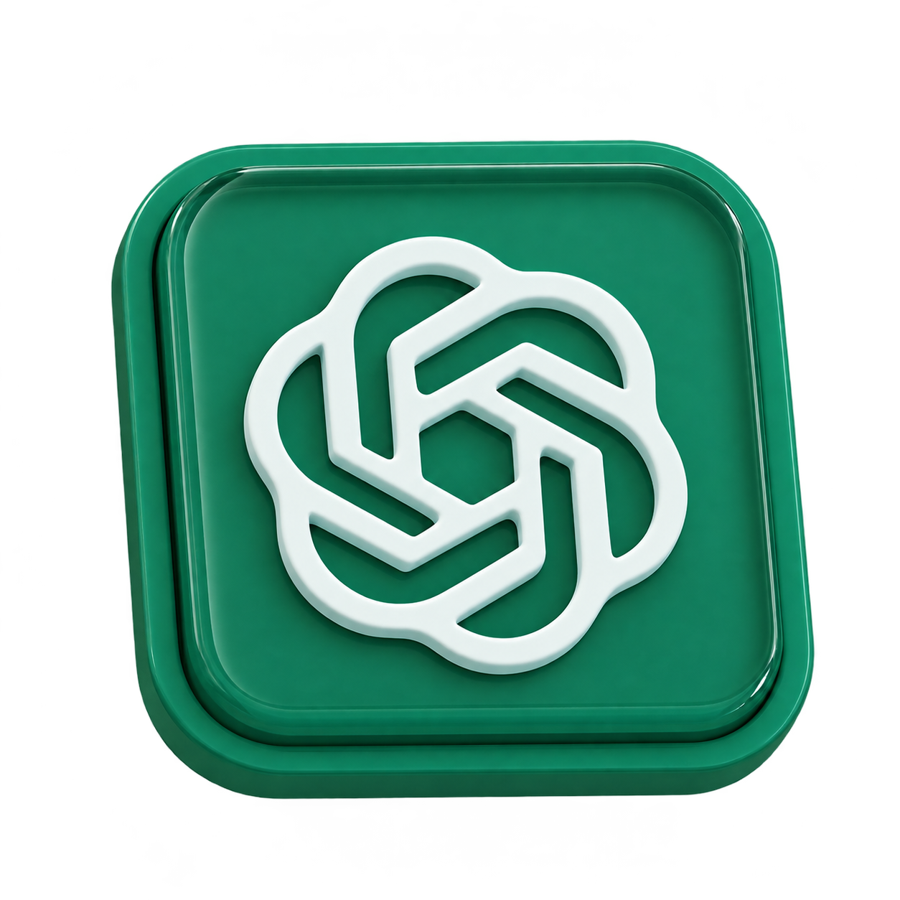
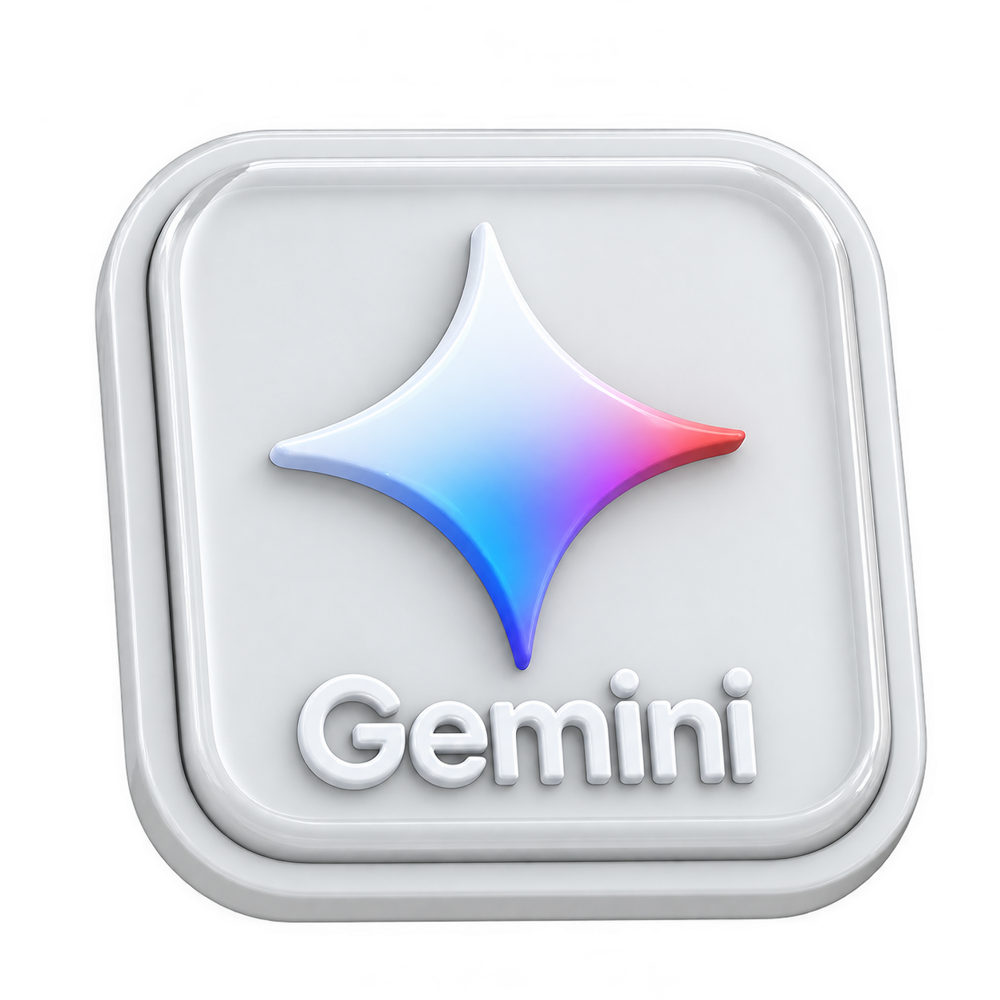
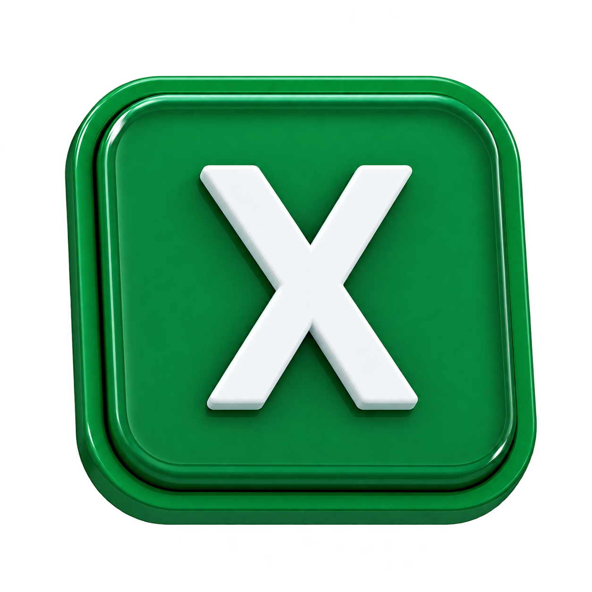

Olá, eu sou o
JOHNATAN BRAGA
Crio experiências digitais modernas e com um design limpo — intuitivas, intencionais e desenvolvidas para tornar cada interação algo natural e sem esforço.







Por trás dos relatórios
Curioso para ver o que eu já analisei?
Explore os tipos de relatórios e análises de dados que já desenvolvi.
Sobre mim
Um pouco da minha trajetória e das ferramentas com as quais trabalho.
- 2020Primeiros passos com dadosTroque pelo seu texto: onde começou e o que aprendeu.
- 2022Relatórios e dashboardsTroque pelo seu texto: projetos, empresas ou cursos.
- HojeCriação com IATroque pelo seu texto: o que faz agora e o que busca.
Ferramentas que uso
Power BILooker Studio
ExcelGoogle Sheets
SQLVS Code
GitHubClaude
ChatGPTCanvaFigma
Contato
Se algum projeto despertou seu interesse, me escreva.